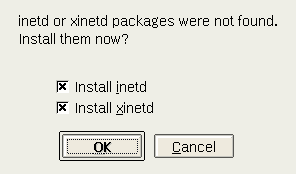
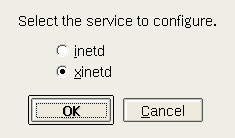
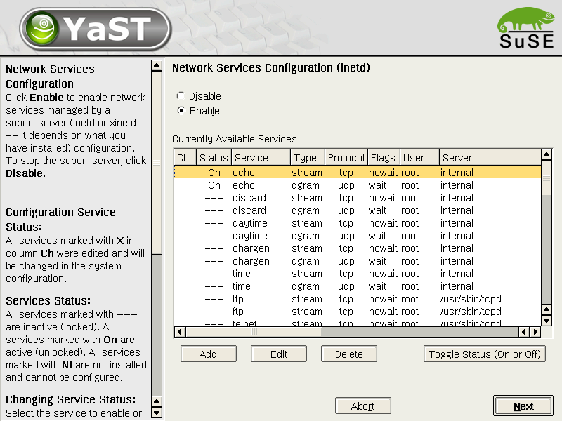
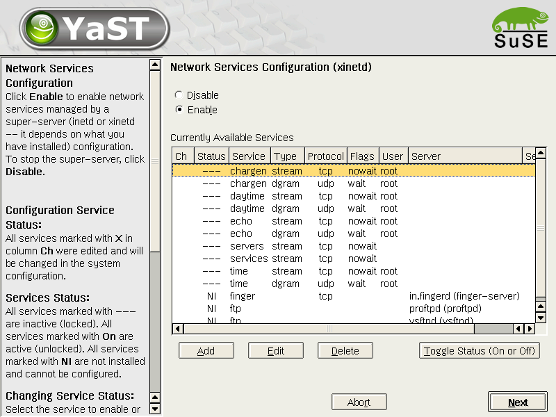
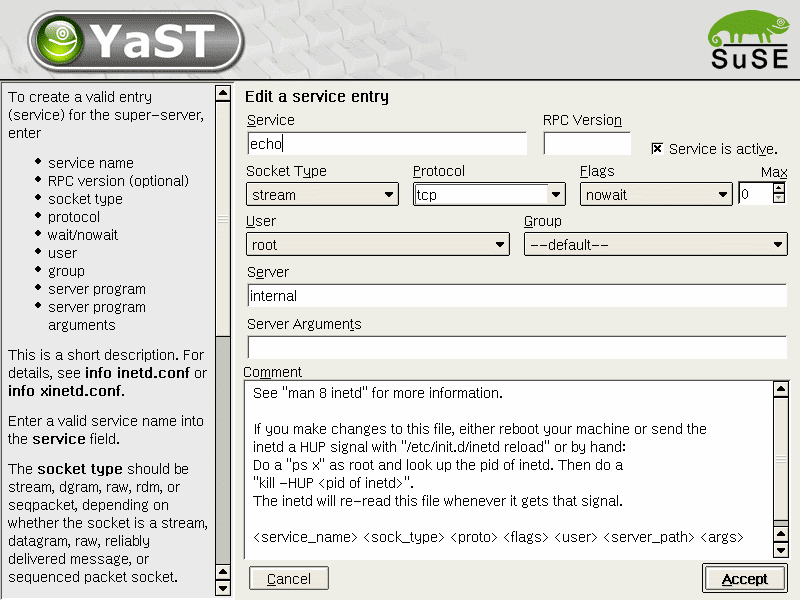
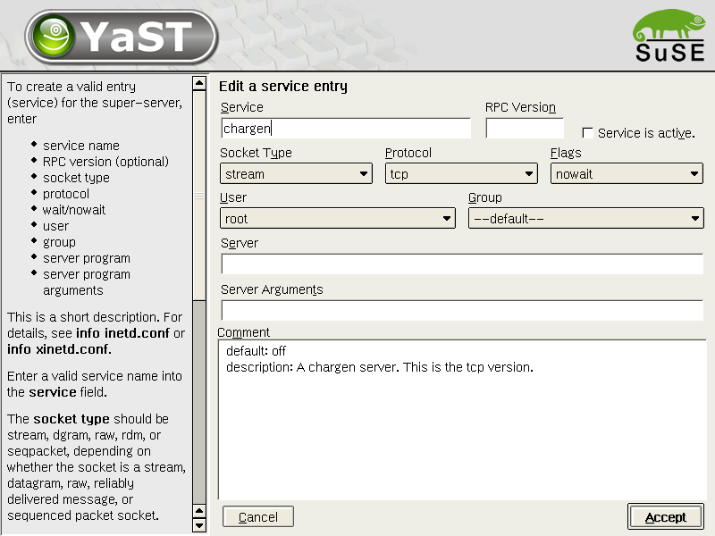
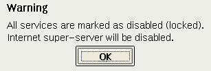

Network Services (inetd) - YaST2 configuration module
$Id$
Martin Vidner
Petr Hadraba
Features
The inetd module handles configuration for inetd and xinetd.
Inetd
The configuration of inetd is stored in /etc/inetd.conf. All services
are specified in this file.
XInetd
The configuration of xinetd is stored in /etc/xinetd.conf and in
/etd/xinetd.d directory. Each service has configuration stored in his
own file there in this directory.
Internet super-server (inetd and xinetd) is executing services (like
finger, echo, telnet...) acording to the network requests.
Background Documentation
Workflow
Changes since SL 8.1
The main change is handling xinetd. Xinetd was selected as default for
SL 8.2.
The configuration scheme is the following:
Each service (like proftpd, finger-server, telnet-server, ...) has his
own xinetd configuration in his own .rpm package. YaST2 module handles
informations about all installable services using xinetd. User can
install these packages using this inetd module (see screenshots).
Overview
Inetd module in autoyast environment
Individual dialogs
 





Implementation